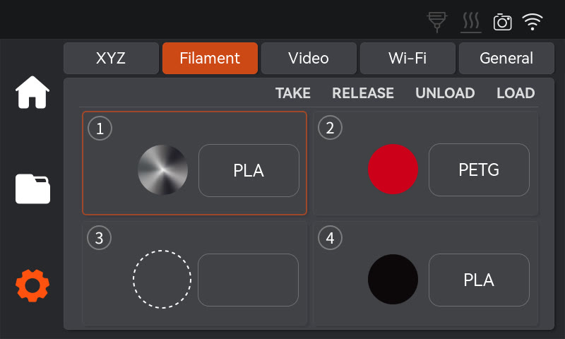

A
B
C
D
Correction in progress. These are the actual saved stock-interface screenshots with HTML review annotations, not new screen mockups. Green marks retained areas; amber marks the scope of changes. Nothing on this page controls the printer.
Keep the State tab, print-files card, bed/chamber panel, light and fan controls. No WM+ replacement header, text navigation rail, or full-screen opaque root.

| Region / scenario | In-place change | Implementation status |
|---|---|---|
| Four External filaments | Move the existing four stock card groups from 2×2 to four columns. Stack their existing number, colour and material widgets vertically. Add brand/edit information with stock styles. | Geometry and stock-constructor/lifetime binding implemented and host-tested for standalone mode; action/edit callback ownership and hardware validation still pending. |
| TAKE / RELEASE / UNLOAD / LOAD row | Move these functions into Toolheads; replace this content-area row with the relevant navigation/context. Do not merely hide active vendor callbacks underneath another widget. | Must identify and detach only the affected vendor callback registrations; not activated. |
| ACE mode | Use head tabs inside the stock content area, followed by native scrolling unit groups. Use the stock card styles for each four-slot group. External sources follow where applicable. | Existing data/command adapters reusable; in-place widget composition pending. |
| Stock refresh | Standalone can retain stock identity refresh where semantics match. ACE cards require owner identity projection, not vendor slot mapping. Preserve all widgets still referenced by vendor refresh. | Refresh writer identified; ownership boundaries still under review. |
Toolhead content should live within the stock Settings shell: four head tabs, filament identity at left, distance/temperature in the middle, retract/extrude arrows at right. Reuse stock temperature fonts, controls and assets where identified. Do not reproduce the mock’s standalone shell. Unit details, adoption, import previews and new selectors use the stock content panel and styling; temporary dialogs may cover content when the workflow requires it.
| Stock symbol | 1.1.13 address | Role / constraint |
|---|---|---|
setup_screen_filament | 0x4f6dec | Calls draw_sidebar(parent,2), draw_setting_menu(parent,1), draw_content_bg(parent), then builds four card groups. Must allow this constructor to run. |
filament_screen_bg | 0x3862f58 | Pointer slot for stock content panel; lifetime must be checked before use. |
obj / img_number_icon / btn_current_color | 0x3862b20 / 0x3862b40 / 0x3862b60 | Arrays of existing card, number and colour objects; retain them rather than drawing covering copies. |
btn_current_materials / label_current_materials | 0x3862b80 / 0x3862ba0 | Existing material button and its label child. |
screen_filament_refresh | 0x4f8e64 | Writes colour/material objects. Cannot delete them and leave stock refresh running. |
event_handler (filament) | 0x4f667c | Existing click dispatch; separate UI selection/edit events from physical load/unload/take/release. |
obj_style_re / obj_style_pr | 0x463c908 / 0x463c918 | Stock card styles applied by constructor; retain rather than reset all styling. |
These addresses are tied to stock client SHA256 b60c96c5caf980a127a3d284e5ac98e799dfd79691cb1a52aafd06fd818c4715. They are offline analysis evidence, not runtime lifetime validation or deployment permission.
Corrected readiness record · Functional flow inventory (presentation superseded)